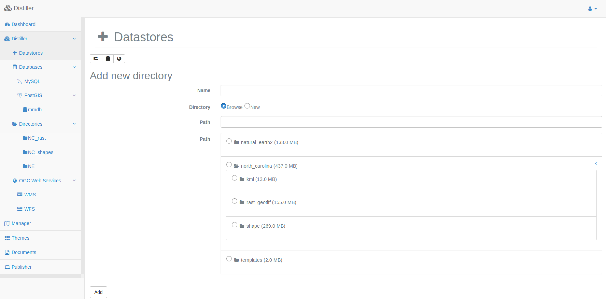

The Distiller module¶
Overview of the interface¶
The Distiller Interface contains two panels and looks similar to the following image.
The Data Stores¶
A Datastore contains data sources. These data sources can be local or remote. It is defined by a unique name and various parameters depending on its type. Currently, there are 3 different datastore types supported in MapMint:
Icon |
Type |
Action |
|
DataBase |
Add a database connection |
|
Directory |
Add a server directory |
OGC Server |
Add a remote WMS/WFS server |


{kind=link}
Warning
The datastore name should not contain any accent or any special character available in any language.
During this workshop, you will use two datastores already available on OSGeoLive 11.0, by the names: NC_Raster and NC_Shapes. To make them available through the Distiller, you have to create a symlink to these directories and allow the apache user to make any modification required to store files in these directories. To do this, use the following commands.
sudo ln -s /usr/local/share/data/north_carolina /var/data/ftp/
sudo chown -R www-data:www-data /var/data/ftp/*/
Note
Afterward, you can always add your own data in /var/data/ftp/your-directory and then create a corresponding datastore from your Distiller.
If you check the checkbox on the left hand side (so in the Data Stores section), you will get a list of available datasources in this datastore. The list of datasources is displayed on the right hand side (so in the Data Sources section).
The Data Sources¶
A data source is corresponding to GIS data available in a datastore (it can be a table in a database, a shapefile in a directory, a layer in WFS/WMS layer). MapMint supports a variety of data sources.
Icon |
Type |
Point datasource |
|
Line datasource |
|
Polygon datasource |
|
Raster datasource |
{kind=link}
{kind=link}
{kind=link}
{kind=link}
Data sources toolbar¶
Once listed, each data source available in a datastore has a toolbar associated with it, which contains the following buttons.
Icon |
Action |
Select the datasource |
|
Preview the datasource |
|
Set the privileges to access the datasource |
|
Process the datasource |
|
Download the datasource |
|
Open the datasource in the Manager |
|
Delete the datasource |
|
Display the datasource (attributes table or histogram) |
{kind=link}
{kind=link}
{kind=link}
{kind=link}
{kind=link}
{kind=link}
{kind=link}
{kind=link}
Warning
When the SRS field contain No EPSG, it means that MapMint understands the SRS of the data source but cannot display it as EPSG code. When the SRS field displays (undefined), it implies that the SRS is unknown. In such a case, MapMint will use EPSG:4326 definition as default SRS, but at any time, a new datasource can be created with correct SRS settings by clicking on the Process button.
Quickly preview your data¶
For both vector and raster data source, you can preview your data source by clicking on the Preview button. On clicking it, you will then get a window presenting the data using a GetMap WMS request and which should look like the following:
Vector data source |
Raster data source |
{kind=link}
{kind=link}
Vector data sources¶
You are invited to first display data sources available in the NC_Shapes data store.
Display attributes table¶
If you press the button looking like a down arrow (the last row of the toolbar table) you can display the attribute values table and browse your data smoothly. Also, you can order and modify column order. One important capability of the table is that you can modify the encoding of your data in case you are using data which is not in UTF-8 encoding. By this, your data will be returned correctly in utf-8 from your WFS server.
Note
Vector data sources are always using a basic style which cannot be accessed.
Convert vector data sources¶
You are invited to click on the Convert button in the toolbar for the poi_names_wake to access the converting tool window as presented in the screenshot below.
{kind=link}
The Vector Converter window contains various parameters which can be set to create a new data source by transforming the original one. There are 4 parts in the form:
Source SRS: optional, to define the source Spatial Reference System (SRS) (should be only used in case when there is undefined written in the SRS section in the data source toolbar.
- Target: to define:
Datastore: the data store where your data source will be created
Datasource name: the name by which your data source will be created
SRS: optional, the SRS used to create the new data source
Format: the data source format of your created data source
Simplify: optional, gives you the capability to simplify the data source geometries
SQL: optional, gives you the capability to simplify the data source geometries
Warning
In case the created data source is a file, make sure to add the extension in its name otherwise it will lead to a directory creation making your data store unavailable. In case, if a directory gets created, you will have to remove the directory first. Then, to have up-to-date list, first right click on the Data Store unavailable and click on the Refresh item from the displayed contextual menu, then check it again.
We will use the following example: from the points of interest data source, you would like to extract the subset containing only the Populated Places. So you will first check the SQL section and fill the textarea with the following query:
SELECT * FROM poi_names_wake WHERE "class" = 'Populated Place'
Now, click on the Run convertion button, once your data source is created, the window gets closed automatically. Now, you should refresh your data store, by accessing the contextual menu by right click on the NC_Shapes data store. Once the Distiller is reloaded, check your data store again and you should be able to see your new data source appearing on the screen.
Note
The Source code of the ZOO-Service vector-converter is based on ogr2ogr from the GDAL library.
Raster data sources¶
You are invited to first display data sources available in the NC_Raster data store.
Display histogram¶
If you press the button looking like a down arrow (the last row of the toolbar table) you can display the histogram of your raster bands.
Raster tools¶
As you did previously for vector data, open the Converter window for the elevation data source.
{kind=link}
Your goal is to create a new raster data sources named as elevation_shaded having a nice shaded relief effect. First select the hillshade method, then set the Filename value to test_elevation_shade then click on the Run button.
You are free to generate more raster data sources using other methods. Please make sure to change the name every time you generate a new raster data source.
Now, you will simply need to refresh you data store as you did before. Once you have it listed, you can preview it.
Open datasources in the Manager¶
Using the raster datasources created in the previous step, prior to go to the next section, please select both the elevation_shaded and elevation datasources, then press the Open in the Manager button of the datastore. This should open your manager with the two datasources available as layers from your Manager.
Note
The raster convertion tools presented here are based on gdaldem dan gdal_contour source code from the GDAL library.